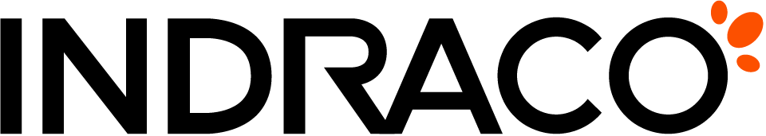

DMS PT INDRACO
Sistem Manajemen Dokumen & Arsip Digital
Menyambungkan ke Pusat Arsip...
Jalur Utama Kantor
Menyiapkan sesi kerja dan menyelaraskan katalog berkas...
Layanan Dokumen Belum Aktif
Aplikasi belum dapat terhubung ke sistem arsip. Pastikan komputer terhubung ke jaringan kantor atau server lokal workstation sudah berjalan.
Jalur: Server Utama Kantor
Mencoba menyambungkan kembali dalam 5 detik...